William S. Harlan
August, 1995
Geophysical inversion frequently makes use of regularization, such as the ``Tikhonov regularization'' used by Kenneth Bube and Bob Langan [1] for their ``continuation approach.'' I'd like to suggest an adjustment of the objective function to allow faster convergence of regularization and the continuation approach. A damping term that discourages complexity can be replaced equivalently by a change of variables to model simplicity directly.
For an optimized inversion, an objective function typically
includes a norm of the difference
between a data vector 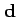 and a non-linear transform
 of a model vector
of a model vector  .
The global minimum of this norm is often flat, with
little sensitivity to large variations in the model.
.
The global minimum of this norm is often flat, with
little sensitivity to large variations in the model.
For regularization (more than simple damping), a
linear operator  is chosen
to remove simplicity and preserve complexity when applied
to the model vector as
is chosen
to remove simplicity and preserve complexity when applied
to the model vector as
 .
Most examples use a roughening operator, such as a derivative, to suppress
long wavelengths and amplify short wavelengths.
A regularized objective function adds a norm of
this roughened model to the norm fitting the data:
.
Most examples use a roughening operator, such as a derivative, to suppress
long wavelengths and amplify short wavelengths.
A regularized objective function adds a norm of
this roughened model to the norm fitting the data:
Bube and Langan's continuation approach begins with a large constant
 , minimizes the objective function (1) for a first model,
then reduces
, minimizes the objective function (1) for a first model,
then reduces  repeatedly for a tradeoff between simplicity
and accuracy in fitting the recorded data. They find
the simplest model possible to explain the data adequately,
without preventing the model from using complexity
to fit genuinely significant features of the data.
Informative details are added to the model when
justified by the data, without unnecessary distracting
details that are poorly determined from the data.
repeatedly for a tradeoff between simplicity
and accuracy in fitting the recorded data. They find
the simplest model possible to explain the data adequately,
without preventing the model from using complexity
to fit genuinely significant features of the data.
Informative details are added to the model when
justified by the data, without unnecessary distracting
details that are poorly determined from the data.
Each minimization of the objective function (1)
for a fixed constant  typically uses a descent method such
as Gauss-Newton with conjugate gradients. The properties of the gradient
are important to the rate of convergence:
typically uses a descent method such
as Gauss-Newton with conjugate gradients. The properties of the gradient
are important to the rate of convergence:
Assume a new operator  as a partial right inverse
of
as a partial right inverse
of  , so that the two operators approximate
an identity:
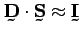.
This operator should be designed to preserve simplicity
and suppress complexity, although without destroying complexity
entirely. If
, so that the two operators approximate
an identity:
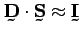.
This operator should be designed to preserve simplicity
and suppress complexity, although without destroying complexity
entirely. If  is a roughening operator like
differentiation, then
is a roughening operator like
differentiation, then  should be a smoothing
operator like leaky integration.
should be a smoothing
operator like leaky integration.
More directly, define the smoothing operator
as a factored form of the assumed covariance.
(Indeed, such a factorization always exists because
the covariance is positive semidefinite.)
Minimization of the original objective function
(1) is entirely equivalent to minimizing
the objective function with a new variable 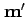,
where
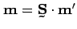:
The revised gradient contains the desired correlation:
The two objective functions produce different results when optimization is incomplete. A descent optimization of the original objective function (1) will begin with complex perturbations of the model and slowly converge toward an increasingly simple model at the global minimum. A descent optimization of the revised objective function (6) will begin with simple perturbations of the model and slowly converge toward an increasingly complex model at the global minimum. The latter strategy is more consistent with the overall goal of the continuation approach. A more economic implementation can use fewer iterations. Insufficient iterations result in an insufficiently complex model, not in an insufficiently simplified model.
I also prefer to adjust more than a single scale factor
 . Instead, assume a suite of simplification operators
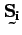 which allow increasing complexity as the
index 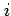 increases. (Furthermore
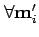 and
. Instead, assume a suite of simplification operators
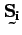 which allow increasing complexity as the
index 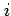 increases. (Furthermore
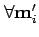 and
 .)
We then can optimize a suite of possible models,
.)
We then can optimize a suite of possible models,
 of increasing complexity as increases.
Use each optimized model 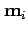 to initialize the
next
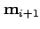. As multigrid
methods have shown, we can thus improve our overall
convergence by optimizing the most reliable (smoothest)
global features in the model before attempting finer
detail.
of increasing complexity as increases.
Use each optimized model 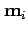 to initialize the
next
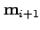. As multigrid
methods have shown, we can thus improve our overall
convergence by optimizing the most reliable (smoothest)
global features in the model before attempting finer
detail.
Finally, I think it easier to choose a simplification
operator  which describes the desirable
features of the model, rather than an operator
which describes the desirable
features of the model, rather than an operator  which keeps only features thought to be undesirable.
I see some value in constructing both, however, to
check the consistency of assumptions.
which keeps only features thought to be undesirable.
I see some value in constructing both, however, to
check the consistency of assumptions.